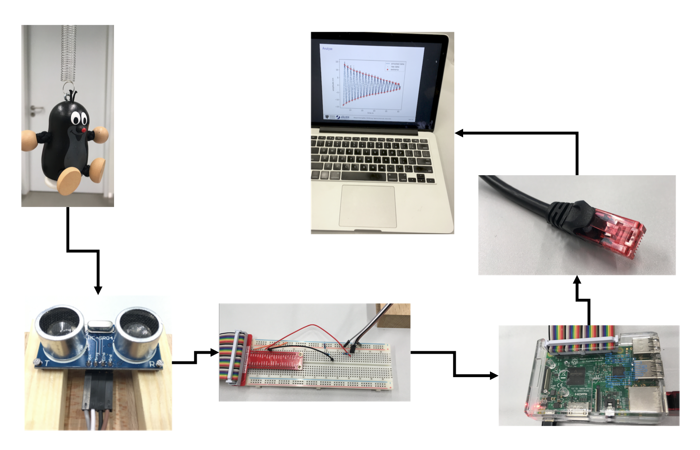

---
redirect_from:
  - "/02-einfuehrung/02-experiment"
interact_link: content/02_einfuehrung/02_experiment.ipynb
kernel_name: python3
kernel_path: content/02_einfuehrung
has_widgets: false
title: |-
  Begleitendes Experiment
pagenum: 9
prev_page:
  url: /02_einfuehrung/01_uebersicht.html
next_page:
  url: /02_einfuehrung/03_themen.html
suffix: .ipynb
search: experimentuebersicht bilder experimentoverview png obige abbildung neues experiment anpassen

comment: "***PROGRAMMATICALLY GENERATED, DO NOT EDIT. SEE ORIGINAL FILES IN /content***"
---

    <main class="jupyter-page">
    <div id="page-info"><div id="page-title">Begleitendes Experiment</div>
</div>
    <div class="jb_cell">

<div class="cell border-box-sizing text_cell rendered"><div class="inner_cell">
<div class="text_cell_render border-box-sizing rendered_html">
<p></p>

</div>
</div>
</div>
</div>

<div class="jb_cell">

<div class="cell border-box-sizing text_cell rendered"><div class="inner_cell">
<div class="text_cell_render border-box-sizing rendered_html">
<p>Obige Abbildung an neues Experiment anpassen.</p>

</div>
</div>
</div>
</div>

 


    </main>
    